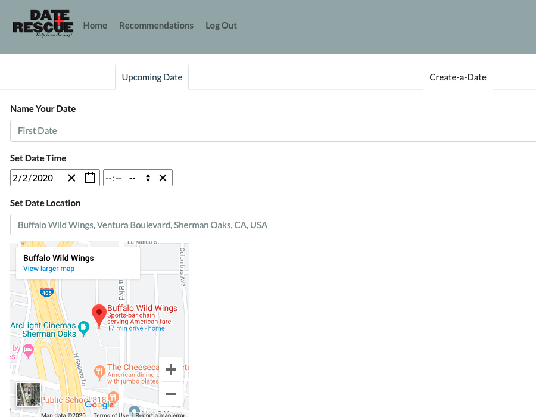

Projects
All| HTML/CSS| Bootstrap| jQuery| React.js| Vue.js| Express| Node.js| MySQL


Date Rescue
Dating safety app made to help people feel secure when meeting potential new flames off of dating
apps.
Users can generate a public “date page” that contains information about their upcoming meeting to
share with friends, or schedule a “rescue call” from the app, which will dial them at a time of
their
choice (providing them a convenient escape in case their date turns sour).
WordLove is a vocabulary-learning app that allows users to search for words and phrases in other
languages (currently supports Spanish, German, Japanese, and Chinese) and save the results of their
choice to customizable vocabulary lists.
The saved vocabulary can be assigned a difficulty, user-created definitions, and notes to assist the
user in memorizing the words based on their learning needs and style.
Looking for the perfect cocktail and music combination? Sit back, relax, and open this app! Users can
search for drinks by name or based on the ingredients
they have at home, and the app will suggest a song to accompany their beverage. Already have some music
queued up? Let Musiholic know what you’re listening to and it will recommend a drink to match your genre
of choice.
The Weather Dashboard shows the current weather for your local area by default, and also allows you to
search for the city/town of your choice.
Just type the name of a town into the search bar and hit the search button to get that town's local
weather and five-day forecast.
Previous searches are saved in local storage, making it possible to easily browse the weather in your
favorite places.
This app uses the OpenWeatherMap API.
Node CLI application that generates an HTML document with information about a team of employees based on
the user's input.
Allows users to add a lead manager and then as many engineers and interns as they want, with different
information requested for each employee type.
Express application that allows users to save, update, and delete notes through a simple, intuitive user
interface.
A save icon appears upon entering a title and text into the note container, and notes can later be
updated or deleted
by accessing them from the side column.